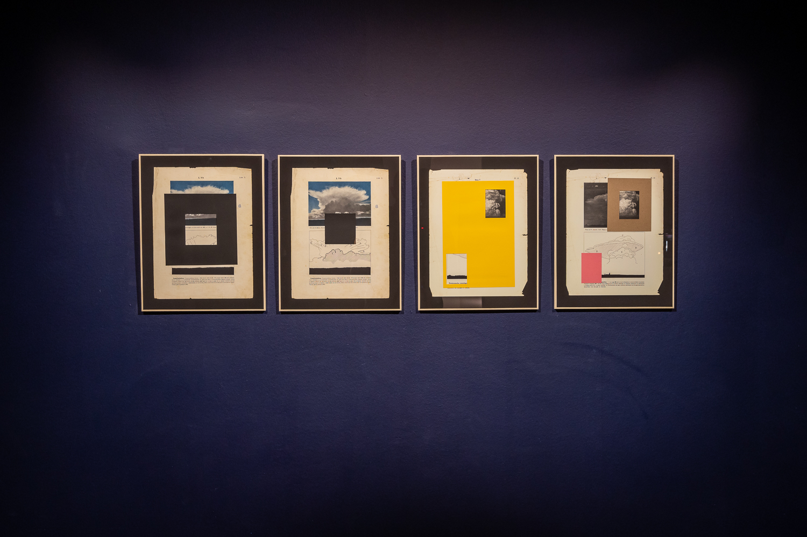
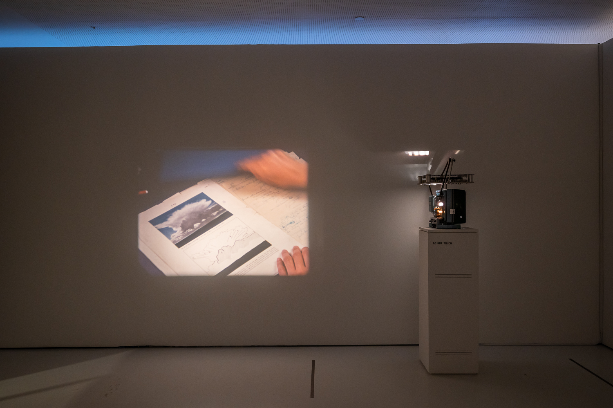
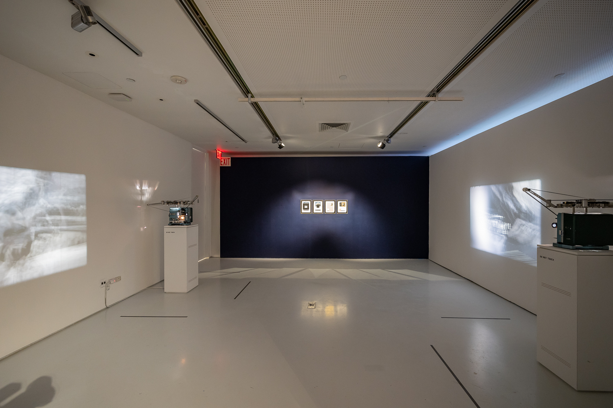

2023
Installation
2 looped films (16mm, 12 mins each, colour and B/W, silent, shot with Bruno Delgado Ramo and Paula Guerrero) and 4 framed collages (240 x 310 mm, colour and B/W prints and paper)
Museum of the Moving Image commissioned work for the exhibition Cinema of Sensations: the Neverending Screen of Val del Omar (March — October 2023)
Installation view at Museum of the Moving Image, New York
Two films are projected in continuous loops on opposite ends of the room, inviting the viewer into a circular experience of the space of projection. The two films present an identical, interchangeable twin structure that corresponds to two complementary perspectives of the camera. The single point of view of both camera and projection has been deconstructed, implicating the body into a complicated cinematic space where the viewer is unable to watch the two sides of the film simultaneously.
‘Trágame, nube (el cuerpo establece el ritmo)’ revolves around some of the most persistent preoccupations about perception Val del Omar expressed in his writings in order to explore an ‘other cinema’ that could have been made during the intervals between frames. As it is commonly known, analogue film is shot at 24 frames per second. In the running of film, the camera’s shutter is closed for half of the time between frames, so technically, the film only captures half of what took place before the camera. This means that for every film that is created, there is another ‘cinema’ of equal length that could have been made during the periods when the shutter was closed. ‘Trágame, nube (el cuerpo establece el ritmo)’ approaches this phenomenon of ‘persistence of vision’ in combination with what Val del Omar called ‘espejo aprojimante’, which is both a technique involving film projected onto a mirror to diffract images, and a way to refer to cinema as a system that brings the viewer closer to her peers. In fact, the term ‘aprojimante' is a wordplay that combines the words ‘approximation’ (aproximación) and ‘prójimo’, which refers to ‘neighbour’ in a catholic way.
The title ‘Trágame, nube’ is taken from a script José Val del Omar wrote in the early forties for a documentary about gliding and its schools in Spain. It also refers to the press clippings unexpectedly found when delving into Val del Omar’s original documents for shooting the central part of the twin films. Moreover, these clippings became the basis of the collages that complement and expand the film installation.
The two films have an exact equal and complementary structure divided into three parts. The first part is a play tag with Spanish filmmaker Bruno Delgado Ramo at the Alhambra palace in Granada (Spain). This emblematic location is charged with meaning in Val del Omar’s oeuvre, as ‘Aguaespejo granadino’ (1953-55) was entirely shot here and Val del Omar was born in Granada. The Alhambra palace, which was the subject of Marie Menken’s renown experimental film ‘Arabesque for Kenneth Anger’ (1961) too, is nowadays packed with tourists from all over the world. In ‘Trágame, nube’, the palace and its beautiful gardens become the background of a site-specific happening or film-performance played by the artists, and pays homage to Hollis Frampton and Joyce Wieland’s collaborative film ‘A and B of Ontario’ (1984) where both chase each other with their Bolex cameras. The second and central part of the films is entirely devoted to a selection of Val del Omar’s original documents held at the library of the MNCARS in Madrid and composed mostly of notes, project drawings, sketches, letters, written material for lectures and press clippings. This section is an attempt to penetrate Val del Omar’s writings and activate them in playful and plastic ways, where gesture plays a significant role. The second and third sections of the films were both shot with Bruno Delgado Ramo and Paula Guerrero, who helped activating the writings, as well as choreographing the actions and interventions in and around the film apparatus presented on the third part of the film, where the syntax of cinema becomes sculpture and performance.
Val del Omar’s writings, works and projects emphasised the importance of engaging the viewer's body and senses. In his work, he often explored the relationship between the body and the cinematic apparatus –ie. his ‘Tactilevisión’ project–, challenging conventional ideas of how films should be viewed and experienced. He believed that the human body was a crucial element in the creation and reception of art, and that film had the potential to activate the viewer's senses and engage them in what he called ‘commotional cinema”. In ‘Trágame, nube (el cuerpo establece el ritmo)’, Val del Omar's interest in the body is reflected in different and significant ways that are inseparable from the body of cinema, inviting viewers to reconsider how their own bodies interact with the films they watch.